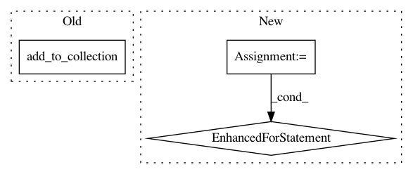

a0f77cc8b87512e691a7c22b6fb9ba60f603b632,network/convolutional_variational_autoencoder.py,VAE_convolutional,layer_op,#VAE_convolutional#Any#Any#,138
Before Change
tf.add_to_collection("NiftyNetCollectionConsole", KL)
LL = tf.summary.scalar("log_likelihood", log_likelihood)
tf.add_to_collection("NiftyNetCollectionConsole", LL)
return [posterior_means, posterior_logvariances, flow_means, data_logvariances,
images, data_variances, posterior_variances]
After Change
name="decoder_trans_conv_means_{}_{}".format(self.trans_conv_kernels_sizes[i], self.trans_conv_features[i])))
print(decoders_means_cnn[-1])
for i in range(0, len(self.trans_conv_features)):
if self.upsampling_mode == "DECONV":
decoders_logvariances_upsamplers.append(DeconvolutionalLayer(
n_output_chns=self.trans_conv_features[i],
kernel_size=2,
stride=2,
padding="SAME",
with_bias=True,
with_bn=True,
w_initializer=self.initializers["w"],
w_regularizer=None,
acti_func="identity",
name="decoder_upsampler_variances_{}_{}".format(2, 2)))
print(decoders_logvariances_upsamplers[-1])
decoders_logvariances_cnn.append(DeconvolutionalLayer(
n_output_chns=self.trans_conv_features[i],
kernel_size=self.trans_conv_kernels_sizes[i],
stride=1,
padding="SAME",
with_bias=True,
with_bn=not (i == len(self.trans_conv_features) - 1), // No BN on output
w_initializer=self.initializers["w"],
w_regularizer=None,
acti_func=self.acti_func_trans_conv_logvariances[i],
name="decoder_trans_conv_variances_{}_{}".format(self.trans_conv_kernels_sizes[i],
self.trans_conv_features[i])))
print(decoders_logvariances_cnn[-1])
// Convolutional encoder layers
flow = images
for i in range(0, len(self.conv_features)):
flow = encoders_cnn[i](flow, is_training)
flow = encoders_downsamplers[i](flow, is_training)
In pattern: SUPERPATTERN
Frequency: 3
Non-data size: 3
Instances
Project Name: NifTK/NiftyNet
Commit Name: a0f77cc8b87512e691a7c22b6fb9ba60f603b632
Time: 2017-07-04
Author: r.gray@ucl.ac.uk
File Name: network/convolutional_variational_autoencoder.py
Class Name: VAE_convolutional
Method Name: layer_op
Project Name: tryolabs/luminoth
Commit Name: 2ba7725df0cbc3183d9cdc49f797614d24c9f80e
Time: 2017-02-23
Author: agustin@tryolabs.com
File Name: detector/detector.py
Class Name:
Method Name: metrics
Project Name: tensorflow/transform
Commit Name: 998b0e8f1c3ec165fc1ca7b6421c96b1c72ec297
Time: 2018-05-30
Author: tf-transform-dev@google.com
File Name: tensorflow_transform/analyzers.py
Class Name: Analyzer
Method Name: __init__